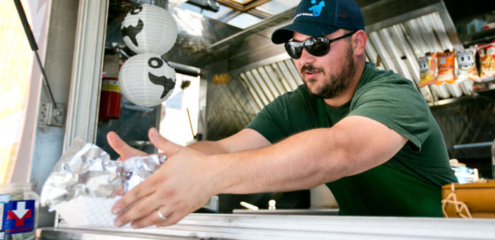

Truck Operator Persona:

- Name: Xavier 'Green-on-the-Side' Chavez
- Age: 37
- Occupation: Food Truck Owner
- Location: Jackson Area, Albuquerque
- Relationship Status: Engaged
- Hobbies: Hiking, Photography, Cooking, Volunteers at Local Food Bank
- Likes: Efficient Marketing
- Owned Technology:
- Phone: Samsung Galaxy Note 8
- Laptop: HP 15-BS212WM 15 inch Windows 10, Chrome, Microsoft Office Suite
- Tablet: Samsung S3, Square Card Reader
- Hotspot: Verizon
- Technology Comfort Level: Daily user of social media for marketing
- Goals/Needs:
- Needs a centralized location to inform his customers
- Needs show his potential customers his food trucks location at any given time
- Wants his location to be easily accessible by potential customers
- Frustrations:
- Not central platform to reach target market
- No easy way to market menu changes
- Time wasted find good locations
User Story
As a food truck owner I want to reach as many potential customers and keep them updated as to my location in the fewest clicks possible
Use Case
Title: Updating food truck location
Description: Xavier wants to share his trucks location and menu changes on his 505 Food Truck Finder profile
Name of User & Their Role: Xavier Chavez, Mobile Restaurateur
Usage Preconditions: Must have truck owner profile on 505 Food Truck Finder and a device capable of visiting the website
Usage Postconditions: Location is pinned to google maps and visible to potential customers using 505 Food Truck Finder
Interaction Flow:
- Xavier enters 505 Food Truck Finder .com into his mobile web browser
- Server receives the request and returns 505 Food Truck Finder's landing page
- Xavier clicks the Truck login button in the top right hand part of the browser window and is prompted to enter his login information. He enters his username and password into the supplied input fields and hits the login button.
- Server receives the data he entered and checks the database to make sure it is valid. After verifying the validity of Xavier's credentials, the server returns Xavier's user profile page.
- Xavier sees his profile, including information like his hero image, his truck name, a button to post his location, and a button to upload and post a picture of his most recent menu. He has just arrived at vendor location for the day and would like to update his location on the website.
- He clicks the "Post My Location" button.
- Server logs the new location for Xavier's user profile, updates the location splash page, and returns an alert that says his location has been updated and is now visible on the site's main page
- Xavier closes the browser window
- The server leaves the session open for 6 hours in case Xavier needs to update his location
Frequency of Use: At least once a day 6 times a week